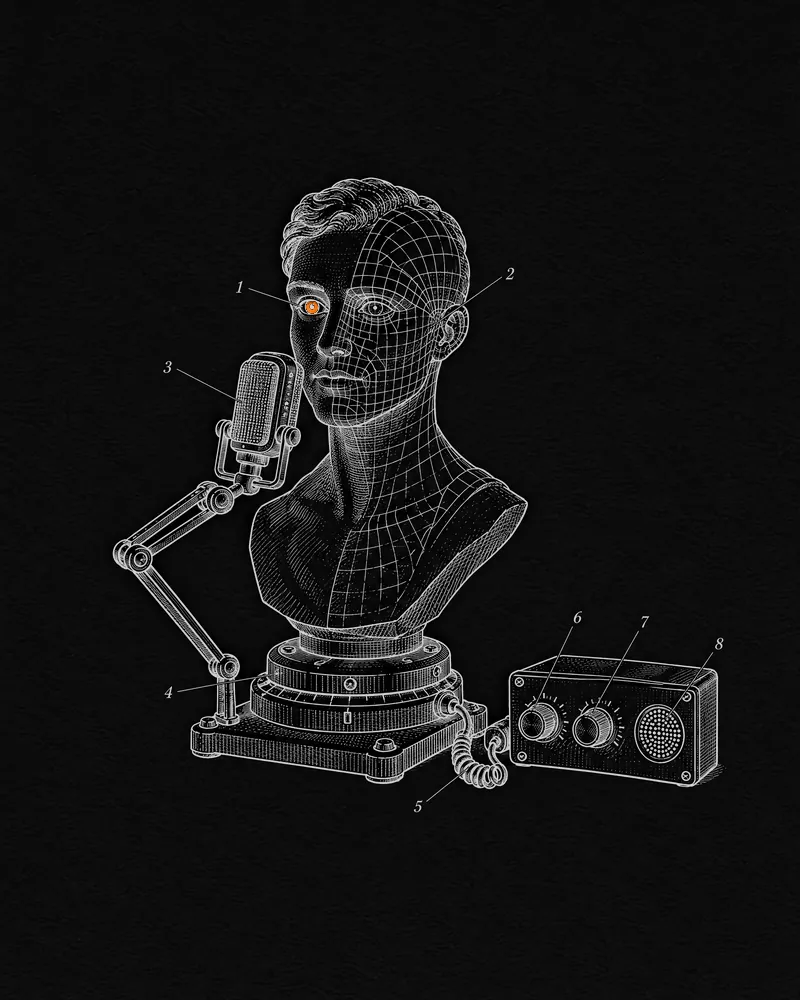

Avatars Global · 2026 — now
AI with a human face
Domain-specialist AI agents with a face and a voice — and a health platform where the avatar has to be grounded, private and safe before anyone talks to it.
- Role
- Chief Technology Officer · also CTO of AverCare
- When
- April 2026 — present
- Company
- Auckland, NZ · ~15 people in 11 countries
- Built with
- AI agents · retrieval over clinical sources · voice · wearables · mobile & web · Unreal Engine

Context
Avatars Global is an Auckland studio founded in 2023 by a team that met at Futureverse. It designs and delivers avatar-powered products for enterprise customers — cinematic character design, AI agents and real-time 3D, built to move brands beyond chatbots into interactive products.
I joined as Chief Technology Officer in April 2026. The studio’s flagship build is AverCare, a personalised health and longevity platform fronted by an avatar called Aver — and I’m AverCare’s CTO as well.
The challenge
Health is one of the most constrained places to put an AI agent. Aver has to explain real medical data credibly without drifting into diagnosis, read continuous signals from wearables that each speak their own format, and pass security and privacy review — SOC 2, HIPAA, GDPR — before a single member talks to it. And because it has a face and a voice, every answer carries more trust than a chatbot’s.
What I do
- Lead technology across the studio’s avatar products — the AI-agent layer behind each character (personality, guardrails, knowledge), and the mobile, web and real-time 3D apps around it.
- As CTO of AverCare, own its platform architecture, system integrity and long-term technical evolution — integrating AI, data and decentralised components with a focus on reliability and security.
- Keep the agent grounded: answers come from a retrieval layer over thousands of medical documents, not from a general model improvising, with escalation to human clinicians built into the flow.
- Treat compliance as architecture — a SOC 2 control environment and HIPAA safeguards designed into the platform, not bolted on before launch.
How AverCare works
- 01CaptureThe Aver band, other wearables and member-reported data flow into one normalised health record.
- 02GroundRetrieval over clinician-vetted literature supplies the context for every answer.
- 03ConverseAver explains the markers against the member’s own baseline — by voice, chat or video, with memory between sessions.
- 04GuardSOC 2 controls and HIPAA safeguards wrap the data; Aver stops short of diagnosis.
- 05EscalateA human stays in the loop — Aver routes members to medical professionals.
The architecture
Where it stands
- 2enterprise platforms at MVP completion — AverCare and FitFur (Jul 2026)
- 20+intelligent avatars built by the studio
- 30+health modules in nine categories on AverCare
- 3ways to talk to Aver — voice, chat and video
- 11countries, one team
- FinalistBest Emerging Business, Auckland Business Awards 2026
AverCare is preparing for a global launch with its waitlist open; FitFur, an AI pet-health and training companion with its own cast of veterinary avatars, is the studio’s second enterprise build. Studio figures are Avatars Global’s own.
Sources
- Our work: intelligent avatar products, end to endAvatars Global ↗
- AI agents: design, integration, back end, front end, contentAvatars Global ↗
- Company page and leadershipAvatars Global · LinkedIn ↗
- AverCare team: Joey Kheireddine, Chief Technology OfficerAverCare ↗
- AverCare FAQ: privacy, compliance and devicesAverCare ↗
- “In the completion stage of MVP for 2 major enterprise projects”Trevor Topfer · LinkedIn · Jul 2026 ↗
- Our 2026 North and West finalistsAuckland Business Awards ↗
- Founder Focus: Avatars GlobalNZ Entrepreneur ↗